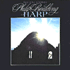

|

Philip Boulding - HARP
"My harp, its many strings vibrating with a healing energy, creates for me both a time of quiet and a time for rhythmic conversations. Musical impressions plucked from my strings, then formed into compositions become expressions of my life, moving from a joyous awakening on the "First of Spring" to a gentle peace found in "The Quiet Garden". In the realm between dreaming and waking, "Spiral Suspension" seeks to interpret a vision midst the depths of the sea, while "Brittany's Dream" suggests the mystery of birth. The "Jester" speaks of a lively level of activity that exists at home where juggling the children's lives with mine poses the question, "am I the juggler or the juggled?" From my retreat looking out over the pasture to Magical Hill and the Puget Sound beyond, news of a tragic even in Northern Ireland brings forth a "Song for Reconciliation", carrying with it my desire to bring solace to troubled lives and a hope to inspire peace throughout the world."
|
Recordings

Harp

Out of Print
|